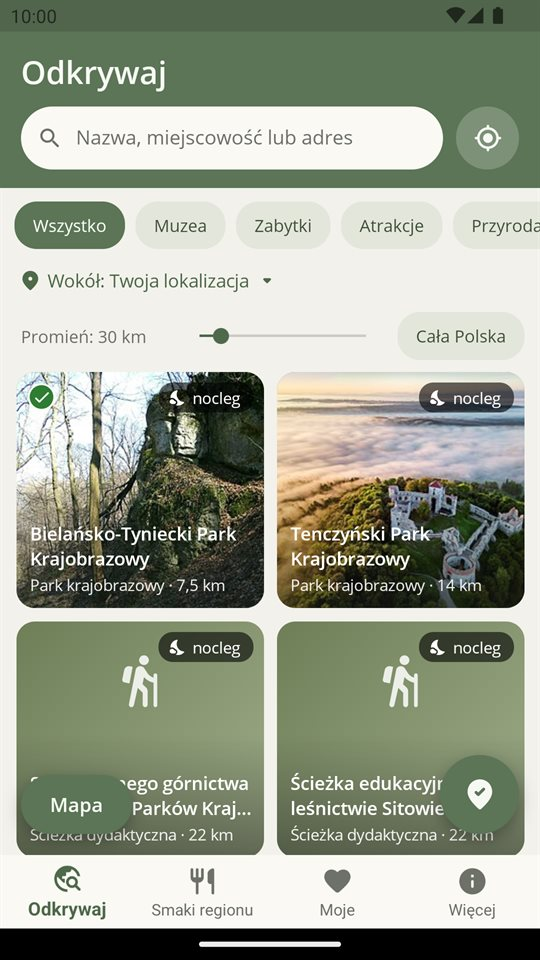
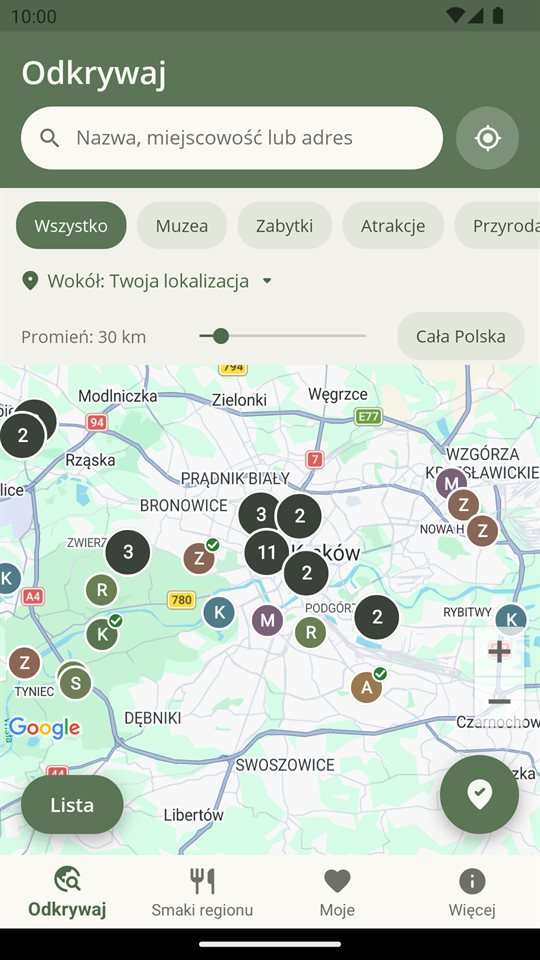
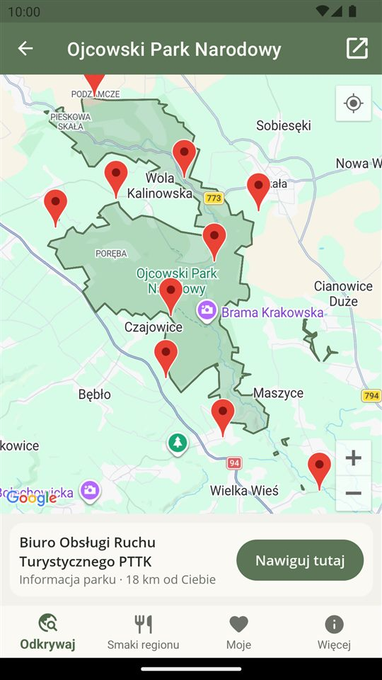
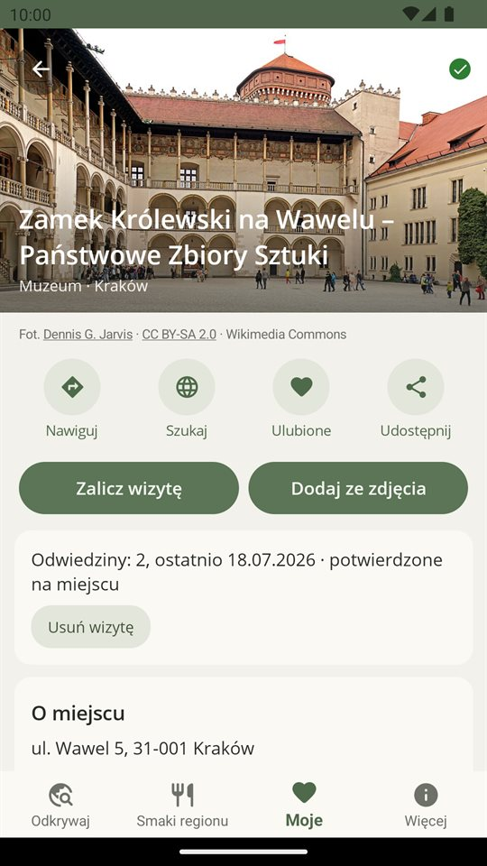
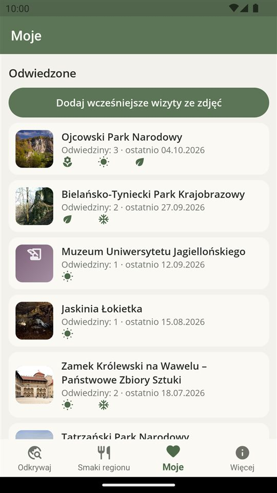

Weekend w regionie: muzea, zamki, przyroda i nocleg w lesie
Wolny weekend i brak pomysłu? Aplikacja pokazuje, co warto zobaczyć w okolicy: muzea, zamki, parki narodowe, rezerwaty, leśne ścieżki, kąpieliska i miejsca, gdzie legalnie przenocujesz w lesie. Działa bez internetu, bez konta i bez reklam.
Nowość Na 11 listopada: 77 miejsc w każdym województwie →
.jpg){kind=link}


Ponad 7 300 miejsc z otwartych danych publicznych
Dane pochodzą z rejestrów państwowych, Lasów Państwowych, Europejskiej Agencji Środowiska i OpenStreetMap. Aplikacja ma je w środku, a nowsze pobiera sama.
Lista i mapa wokół Ciebie
Miejsca posortowane według odległości, z promieniem od 5 do 200 km. Możesz też szukać wokół dowolnej miejscowości, np. przed wyjazdem.
Nocleg w lesie
Filtr „Tylko z noclegiem w lesie” pokazuje miejsca objęte programem „Zanocuj w lesie” Lasów Państwowych.
Parki, rezerwaty, ścieżki
Granice i przebieg na mapie oraz parkingi. Wybierasz parking i nawigujesz prosto do niego.
Odwiedzone miejsca
„Jestem na miejscu” zalicza miejsce jednym stuknięciem. Zapomniane wizyty dodasz ze zdjęcia z zapisaną lokalizacją.
Smaki regionu
Ponad 2 100 produktów tradycyjnych z każdego województwa, które warto spróbować na miejscu.
Prywatnie
Bez konta i bez reklam. Lokalizacja, ulubione i odwiedziny zostają wyłącznie na Twoim telefonie.




Najczęstsze pytania
Ile kosztuje aplikacja?
Jest bezpłatna, bez reklam i bez konta.
Czy działa bez internetu?
Tak. Wszystkie dane są w aplikacji, więc lista i karty miejsc działają także bez zasięgu. Mapa korzysta z map Google, więc do jej podkładu potrzebny jest internet.
Gdzie trafia moja lokalizacja?
Nigdzie. Jest używana tylko na telefonie, żeby posortować miejsca według odległości i zaliczyć wizytę. Szczegóły w polityce prywatności.
Skąd są dane?
Z otwartych danych publicznych: dane.gov.pl, Generalna Dyrekcja Ochrony Środowiska, Państwowy Instytut Geologiczny, Narodowy Instytut Dziedzictwa, Lasy Państwowe, Europejska Agencja Środowiska i OpenStreetMap (© autorzy OpenStreetMap, licencja ODbL). Pełna lista jest w aplikacji w zakładce „Więcej”.
Czy to aplikacja urzędowa?
Nie. Weekend w regionie jest aplikacją niezależną i nie jest powiązana z żadnym urzędem ani instytucją publiczną. Przed wyjazdem sprawdź godziny otwarcia na stronie danego miejsca.
Znalazłem błąd w danych. Co robić?
Napisz na kontakt@appstorm.eu. Dane w aplikacji są aktualizowane co tydzień.